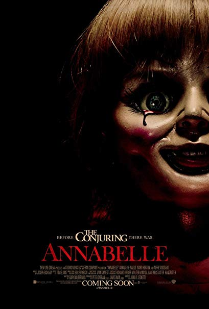
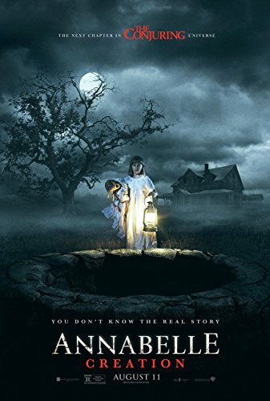

Before there was Amityville, there was Harrisville. "The Conjuring" tells the true story of Ed and Lorraine Warren (Patrick Wilson, Vera Farmiga), world renowned paranormal investigators, who were called to help a family terrorized by a dark presence in a secluded farmhouse. Forced to confront a powerful demonic entity, the Warrens find themselves caught in the most horrifying case of their lives.
Before there was Amityville, there was Harrisville. "The Conjuring" tells the true story of Ed and Lorraine Warren (Patrick Wilson, Vera Farmiga), world renowned paranormal investigators, who were called to help a family terrorized by a dark presence in a secluded farmhouse. Forced to confront a powerful demonic entity, the Warrens find themselves caught in the most horrifying case of their lives.
John Form has found the perfect gift for his expectant wife, Mia - a beautiful, rare vintage doll in a pure white wedding dress. But Mia's delight with Annabelle doesn't last long. On one horrific night, their home is invaded by members of a satanic cult, who violently attack the couple. Spilled blood and terror are not all they leave behind. The cultists have conjured an entity so malevolent that nothing they did will compare to the sinister conduit to the damned that is now... Annabelle.
 In 1977, paranormal investigators Ed and Lorraine Warren travel to London, England, where single mother Peggy Hodgson believes that something evil is in her home. When Peggy's youngest daughter starts showing signs of demonic possession, Ed and Lorraine attempt to help the besieged girl, only to find themselves targeted by the malicious spirits.
In 1977, paranormal investigators Ed and Lorraine Warren travel to London, England, where single mother Peggy Hodgson believes that something evil is in her home. When Peggy's youngest daughter starts showing signs of demonic possession, Ed and Lorraine attempt to help the besieged girl, only to find themselves targeted by the malicious spirits.
Twelve years after the tragic death of their little girl, a doll-maker and his wife welcome a nun and several girls from a shuttered orphanage into their home, where they become the target of the doll-maker's possessed creation, Annabelle.
 When a young nun at a cloistered abbey in Romania takes her own life, a priest with a haunted past and a novitiate on the threshold of her final vows are sent by the Vatican to investigate. Together they uncover the order's unholy secret. Risking not only their lives but their faith and their very souls, they confront a malevolent force in the form of the same demonic nun that first terrorized audiences in 'The Conjuring 2,' as the abbey becomes a horrific battleground between the living and the damned.
When a young nun at a cloistered abbey in Romania takes her own life, a priest with a haunted past and a novitiate on the threshold of her final vows are sent by the Vatican to investigate. Together they uncover the order's unholy secret. Risking not only their lives but their faith and their very souls, they confront a malevolent force in the form of the same demonic nun that first terrorized audiences in 'The Conjuring 2,' as the abbey becomes a horrific battleground between the living and the damned.